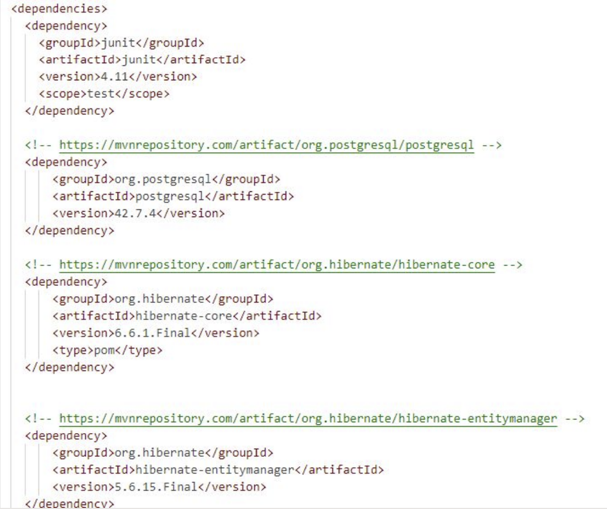
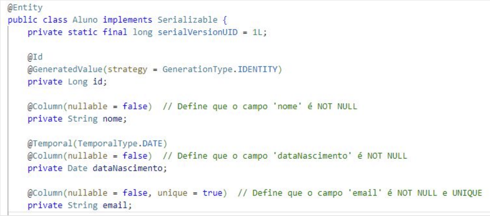

Disciplinas
LABORATÓRIO DE BANCO DE DADOS. Concluído
Materiais
[UFMS Digital] Laboratório de Banco de Dados - Módulo 3 - Unidade 2 sendProf.ª ministrante: Esteice Janaina Santos Batista.
Conexão com banco.
A conexão de uma aplicação com um banco de dados é o processo que permite que uma aplicação interaja com um banco de dados para realizar operações, como inserir, consultar, atualizar ou deletar dados.
Em termos práticos, ela é a ponte que permite que o código da aplicação troque informações com um banco de dados relacional ou não-relacional.
JDBC (Java Database Connectivity) é uma API de baixo nível para conexão com bancos de dados em Java para executar comandos SQL.
Embora seja muito poderoso, o JDBC requer que os desenvolvedores gerenciem manualmente as conexões, preparem consultas e lidem com o tratamento de exceções de baixo nível.
O JDBC fornece uma interface direta para o banco de dados, permitindo abrir conexões, executar comandos SQL (como SELECT, INSERT, UPDATE) e recuperar resultados.
package com.example;
import java.sql.Statement;
import java.sql.Connection;
import java.sql.DriverManager;
import java.sql.ResultSet;
import java.sql.SQLException;
/*
* Hello world!
*
*/
public class App
{
public static void main(String[] args)
{
try {
Connection conexao = DriverManager.getConnection("jdbc:postgresql://localhost:5432/Aulas",
"postgres", "serafim86");
if (conexao != null) {
System.out.println("Banco de dados conectado com sucesso!");
Statement stm = conexao.createStatement();
// Chama a função consultaDados para buscar os dados
consultaDados(stm);
stm.close();
} else {
System.out.println("Conexão falhou!");
}
} catch (SQLException e) {
e.printStackTrace();
}
};
public static void consultaDados(Statement stm){
String query = "SELECT * FROM alunos;";
try {
ResultSet result = stm.executeQuery(query);
while (result.next()) {
System.out.println(result.getString("nome"));
}
} catch (Exception e) {
e.printStackTrace();
}
};
}
Exemplo de Conexão JDBC com Java.
Estabelecer a conexãoPara estabelecer a conexão, você precisa da URL do banco de dados, nome de usuário e senha.
Connection conn = DriverManager.getConnection(
"jdbc:postgresql://localhost:5432/meuBanco", "usuario", "senha"
);
Criar uma instrução (Statement)
Um Statement é usado para executar consultas e comandos SQL
Statement stmt = conn.createStatement();
Executar uma consulta
Você pode executar consultas SQL como SELECT, INSERT, UPDATE e DELETE usando o objeto Statement.
Exemplo de um comando SQL para recuperar dados:
ResultSet rs = stmt.executeQuery("SELECT * FROM clientes");
stmt.executeUpdate("INSERT INTO clientes (nome, email) VALUES ('João', 'joao@email.com')");
Processar os resultados
Você pode processar os dados do ResultSet para exibi-los ou manipulá-los.
while (rs.next()) {
String nome = rs.getString("nome");
String email = rs.getString("email");
System.out.println("Nome: " + nome + ", Email: " + email);
}
Fechar a conexão
Após terminar as operações com o banco de dados, é importante fechar a conexão para liberar recursos.
rs.close();
stmt.close();
conn.close();
Resumo de como o JDBC funciona:
- Connection: é o objeto responsável por gerenciar a conexão com o banco de dados.
- Statement ou PreparedStatement: são objetos usados para enviar consultas SQL ao banco de dados.
- ResultSet: armazena os resultados das consultas SQL (usado para SELECT).
Mapeamento Objeto-Relacional (OR).
O Mapeamento Objeto-Relacional (OR), ou ORM (Object-Relational Mapping), é uma técnica utilizada para converter dados entre sistemas de tipos incompatíveis usando orientação a objetos.
Ele cria uma "ponte" entre o mundo dos objetos nas linguagens de programação (como Java) e o mundo dos bancos de dados relacionais (como PostgreSQL ou MySQL).
No Java, você trabalha com objetos, enquanto os bancos de dados utilizam tabelas.
O Mapeamento OR facilita a tarefa de transformar (ou mapear) essas classes e objetos em tabelas e registros de forma automática, sem que você tenha que escrever todo o código SQL manualmente.
Isso economiza tempo, reduz erros e mantém o foco do desenvolvimento no código orientado a objetos.
Por que usar Mapeamento OR?.
- Automatiza a interação com o banco de dados: Você pode trabalhar diretamente com objetos no seu código Java, e o Mapeamento OR se encarrega de traduzir as operações com esses objetos para o banco de dados.
- Reduz a necessidade de SQL manual: A maioria das operações SQL (inserir, atualizar, deletar) pode ser feita através do código Java.
- Facilita a manutenção: Ao mapear as entidades (classes Java) diretamente para as tabelas, o código fica mais organizado e fácil de manter.
Relacionamento entre as classes.
Além de mapear as classes para tabelas, o Mapeamento OR também permite que você defina relacionamentos entre as classes, como no banco de dados.
Por exemplo, você pode ter uma relação entre Cliente e Produto, onde um cliente pode comprar vários produtos.
Com a anotação @OneToMany, definimos que um cliente pode comprar vários produtos e o Mapeamento OR vai gerenciar isso, criando uma tabela de relacionamento no banco de dados para armazenar essas informações.
@OneToOne (Um-para-Um)Define um relacionamento de "Um-para-Um" entre duas entidades. Isso significa que uma instância de uma entidade está associada a no máximo uma instância de outra entidade.
@ManyToMany (Muitos-para-Muitos)Define um relacionamento "Muitos-para-Muitos", onde várias instâncias de uma entidade estão associadas a várias instâncias de outra entidade. Esse tipo de relacionamento geralmente envolve uma tabela intermediária.
@Entity
public class Cliente {
@Id
@GeneratedValue(strategy = GenerationType.IDENTITY)
private Long id;
private String nome;
@OneToMany
private List <Produto> produtosComprados;
// Construtores, Getters e Setters
}
Benefícios práticos.
Você não precisa escrever comandos SQL para inserir, atualizar, ou deletar registros. Tudo isso é feito através das operações normais com os objetos Java.
A estrutura do banco de dados fica "escondida", e você pode focar no código orientado a objetos, enquanto o Mapeamento OR cuida de como esses objetos se relacionam com o banco de dados.
Exemplo: Se você quiser adicionar um novo cliente ao banco de dados, basta criar uma instância da classe Cliente e salvar:
Cliente cliente = new Cliente();
cliente.setNome("João");
cliente.setEmail("joao@gmail.com");
// A linha abaixo insere o cliente no banco de dados
entityManager.persist(cliente);
Conexão com banco.
Conectar um aplicativo Java a um banco de dados envolve várias ferramentas e tecnologias, cada uma desempenhando um papel específico.
Conexão com banco: Maven.
Maven é uma ferramenta de automação de build e gerenciamento de dependências para projetos Java. Sua principal função é facilitar o processo de construção, gerenciamento e integração de bibliotecas em projetos Java.
Maven baixa e gerencia automaticamente as bibliotecas necessárias para o projeto, como as bibliotecas de JPA, Hibernate, e JDBC. Ao invés de adicionar manualmente essas bibliotecas ao projeto, o Maven permite que você defina todas as dependências em um arquivo chamado pom.xml.

Conexão com banco: JPA.
JPA (Java Persistence API) é a especificação oficial da Java EE para o mapeamento objeto-relacional (ORM). Ele define um conjunto de regras para gerenciar persistência de dados em bancos de dados relacionais através de objetos Java.
Permite que você defina entidades Java (classes) que correspondem a tabelas no banco de dados (ORM).
O JPA abstrai a camada de persistência, permitindo que os desenvolvedores manipulem os dados no banco de dados como objetos Java, sem precisar escrever consultas SQL diretamente.
